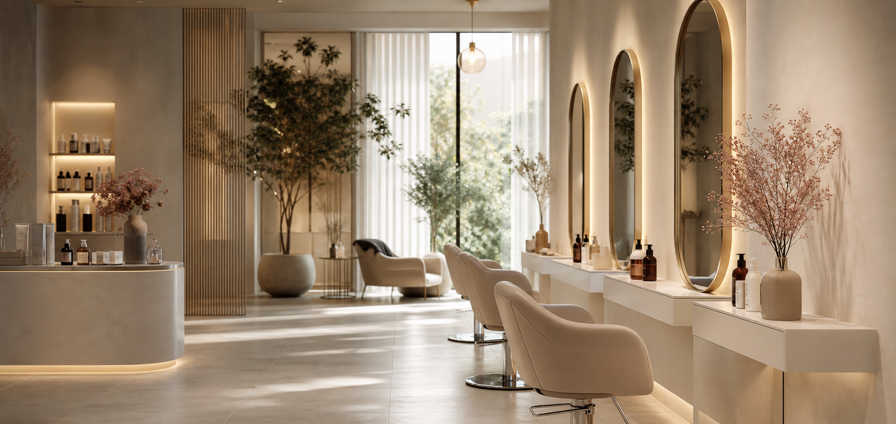

仕上がり写真をカテゴリ別に整理。

初回、通常、オプションを掲載。
得意な施術や雰囲気を見せます。
スマホで写真・料金・予約
施術写真、料金、所要時間、予約ボタンを小さな画面で見やすく整理。
地域名と施術メニュー
エリア、メニュー、スタッフ情報を検索されやすい構成に調整。
LINE・指名・外部予約
来店前の迷いを減らし、希望メニューから予約へ進める導線を用意。
写真とキャンペーン更新
施術例、料金、季節メニュー、スタッフ紹介を差し替えやすく設計。
Marketplace Grade
施術写真、料金、スタッフから初回予約へ進む商品設計。
サロンHPで止まりやすい「どのメニューを選べばいいか」を、写真、価格、所要時間、スタッフ情報でほどきます。
予約前の迷いを再現
初回来店の人がスタイル、料金、空き枠を見てLINE予約へ進む流れを確認できます。
LINE予約と指名予約
希望メニュー、担当者、所要時間を見せた直後に予約導線を置けます。
写真・料金・スタッフを差し替え
施術写真、料金表、スタッフ紹介、クーポン、予約URLを店舗ごとに変更できます。
キャンペーンと空き枠を更新
季節メニュー、初回特典、スタッフ出勤、当日空き枠を運用情報として出せます。
First Visit Guide
初回客が「どれを予約すればいいか」で止まらない見せ方。
髪の悩み、予算、所要時間、希望の仕上がりからおすすめメニューを選べるようにし、LINE予約へ自然につなげます。
艶と透明感を出したい
カラー、カット、集中ケアをセットで提案。初回の失敗不安を減らします。
おすすめ: 艶カラー + カット短時間で整えたい
仕事帰りや予定前でも予約しやすい、60分以内のメニューを提示。
おすすめ: 似合わせカット疲れも一緒にケアしたい
頭皮ケア、香り、静かな席など、癒やし目的の来店理由を作ります。
おすすめ: ヘッドスパ
Available Today
15:30 Mika
18:00 Hana
初回カウンセリング 15分込み
Style Gallery
Natural gloss bob
写真がまだ少ない店舗でも、ヒーロー画像とカード構成で雰囲気を整えます。
Brand Mood
「なんとなく良さそう」ではなく、予約したくなる空気を作る。
写真、料金、スタッフ、口コミ、予約導線を同じトーンでまとめることで、Instagramから来た人の受け皿になります。
Reserve
メニュー選択から予約まで、スマホで完結する見せ方。
予約サイト、LINE、電話のどれにも差し替え可能。初回の人が迷いやすいメニュー選びをサポートします。
Guest Voice
初めての人が安心できる、短い口コミ枠。
スタイル写真と料金の組み合わせで不安を減らします。
得意メニューを口コミと一緒に見せます。
継続来店につながる導線を置きます。
Social Proof
仕上がり写真から、指名予約までつなげる。
サロンは雰囲気だけでは予約されません。写真、料金、所要時間、スタッフを結び、初回予約しやすい導線を作ります。
初回予約へ誘導
LINE CTAメニュー選択からLINE予約までを近くに置き、スマホで迷わず進めます。
仕上がりを比較
写真枠ビフォーアフター、スタイル写真、得意メニューをまとめて見せます。
スタッフ指名に対応
指名予約担当者の得意分野と口コミを見せ、予約前の安心感を高めます。
Price Menu
料金と所要時間が見えるから、予約しやすい。
サロンサイトは、写真だけでは予約に進みにくいです。メニュー、時間、指名、初回特典を見せて、LINE予約まで迷わせない構成にします。
初回カット
4,400円〜初めての来店に向いた入口。
- 所要時間60分
- カウンセリング込み
- スタイリスト紹介
カット + カラー
9,900円〜主力メニューを一番目立つ位置に。
- 所要時間120分
- 仕上がり写真
- LINE予約対応
髪質改善ケア
7,700円〜悩み相談から予約につなげる枠。
- 悩み別説明
- ビフォーアフター
- 指名相談
Before Contact
初めての予約で不安になる点を、先に見せる。
美容・サロンでは、仕上がり写真だけでなく、料金、所要時間、スタッフ、予約方法が見えることが信頼になります。来店前の小さな迷いを減らすための枠を用意しています。
施術メニューを選びやすく
カット、カラー、ネイル、エステなどを料金と所要時間つきで整理。初めての人が自分に合うメニューを見つけやすくします。
スタッフと仕上がりを伝える
担当者、得意スタイル、ビフォーアフター、口コミを同じ流れで掲載。指名や相談につながる見せ方にできます。
LINE予約まで近くする
LINE、電話、予約フォームの導線をスマホで押しやすく配置。来店したい気持ちが冷める前に予約へ進めます。
FAQ
初回来店前の不安を、予約前に消す。
料金、所要時間、指名、LINE予約など、来店前に迷いやすい質問をページ内で答えられるようにします。
メニューが多くても見やすくできますか。
カット、カラー、ケア、ネイルなどをカテゴリ化し、料金と所要時間をセットで表示できます。
LINE予約や外部予約サイトに対応できますか。
対応できます。LINE、ホットペッパー等の予約URL、電話を現在の運用に合わせて配置します。
スタッフ指名や得意スタイルも載せられますか。
スタッフ紹介、得意スタイル、施術写真、口コミをまとめて表示し、指名予約につながる構成にできます。
Launch Checklist
施術写真、料金、予約導線を公開前にそろえる。
サロンHPは、仕上がり写真と料金表、予約導線が揃うと一気に商品感が出ます。初回来店の流れまで整理します。
用意する素材
施術写真、メニュー表、スタッフ写真、営業時間、予約URL、初回クーポン情報を差し替えます。
写真はカテゴリ別に整理検索に寄せる
地域名、サロン種別、得意メニュー、スタッフ指名など、検索されやすい言葉をページ内に入れます。
美容室 / ネイル / エステに対応予約導線を維持
LINE予約、外部予約、電話を迷わず押せるよう配置し、キャンペーンや空き枠も更新しやすくします。
スマホ予約を最優先Responsive Preview
写真は大きく、料金と予約はスマホで押しやすく。
サロンは来店前にスマホで比較されやすいため、施術写真、料金、所要時間、予約導線を画面幅ごとに整理しています。
QA Point
施術名、料金、担当者、予約リンクをスマホで読み切れる長さに調整しやすい構成です。
Included Package
施術写真、料金、予約方法まで、初回来店の不安を減らす構成。
美容サロンのHPは雰囲気だけでは売れません。施術内容、所要時間、担当者、予約導線がひと続きで見えるよう、販売用テンプレートとして整理しました。
サロン向け基本ページ
- ヒーロー、メニュー、初回来店ガイド
- 料金比較、FAQ、公開前チェック
- スタッフ、予約CTA、スマホ固定導線
予約につながる流れ
- 施術メニューを比較
- 料金と時間を確認
- LINE、電話、外部予約へ移動
差し替える情報
- 施術写真、料金表、所要時間
- スタッフ写真、得意メニュー
- 予約URL、営業時間、キャンペーン
Product Spec
「おしゃれ」だけで終わらせず、来店前に確認したい情報と予約導線を最初から組み込んでいます。
Customize Map
施術内容を変えれば、すぐ自店の予約ページになる。
サロンは更新頻度が高い業種です。施術写真、料金、スタッフ、予約リンクを分けて差し替えやすくしています。
サロンの強み
髪質改善、ネイル、エステなど、専門性と初回来店の安心材料を調整。
施術例・スタッフ
ビフォーアフター、店内、スタッフ写真を差し替えて指名予約につなげる。
LINE・外部予約
予約サイト、LINE、電話の優先順位を現在の運用に合わせて変更。
料金・キャンペーン
季節メニュー、初回割引、所要時間を更新しやすい構成にする。
Handoff Guide
施術写真と料金変更を、公開後も更新しやすく。
サロンはメニューやキャンペーンの入れ替えが多いため、納品後に触る場所をあらかじめ分けます。
用意する素材
施術写真、料金表、スタッフ写真、営業時間、予約URLを揃えます。
編集メモ
メニュー、所要時間、初回特典、スタッフ紹介の差し替え箇所を明確にします。
公開前チェック
LINE予約、外部予約、スマホ固定CTA、料金表の読みやすさを確認します。
運用ポイント
季節キャンペーン、空き枠、スタッフ変更を更新しやすい前提です。
Buyer Ready
予約導線とメニュー更新の両方を、納品後に迷わず管理できる構成です。
Use This Template
店名、写真、料金表を差し替えて、サロンHPとして公開できます。
ヘアサロン、ネイル、まつ毛、エステなどに合わせて色・文章・メニュー構成を調整できます。